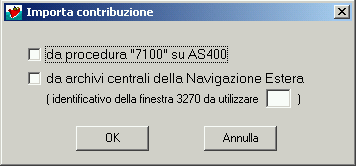

Apre la finestra per la selezione del tipo d'importazione da eseguire:

Con Annulla si chiude la finestra.
1)
da procedura "7100" su AS400
Importa dal sistema AS400 la posizione acquisita con il programma 7100. Richiede la chiusura della eventuale posizione in lavorazione.
Il
collegamento con il sistema AS400 deve essere preventivamente attivato. Con il comando OK si apre la
finestra per la immissione dei dati necessari all'importazione della posizione: dati per la connessione e numero di matricola assegnato dalla procedura "7100".
Segue il messaggio relativo alla scelta tra la costituzione della posizione “fuori gestione” e l’importazione dei dati dalla base anagrafica (ARCA) - programma 408 su AS/400.
Vedere le
ISTRUZIONI della Sezione gestione posizione.
Gli importi in Lire dei periodi contributivi importati vengono anche convertiti automaticamente in Euro.
2)
da archivi centrali della Navigazione Estera
La procedura si avvale, per questa funzione, della procedura di emissione della dichiarazione di servizio / estratto conto della Navigazione Estera.
Nella casella di testo
identificativo della finestra 3270 da utilizzare la procedura propone, ma si può modificare, quello impostato nella procedura di emissione delle dichiarazioni.
La finestra "3270" deve essere preventivamente aperta.
Vedere la Sezione gestione della contribuzione -
Importazione della contribuzione della Navigazione Estera.